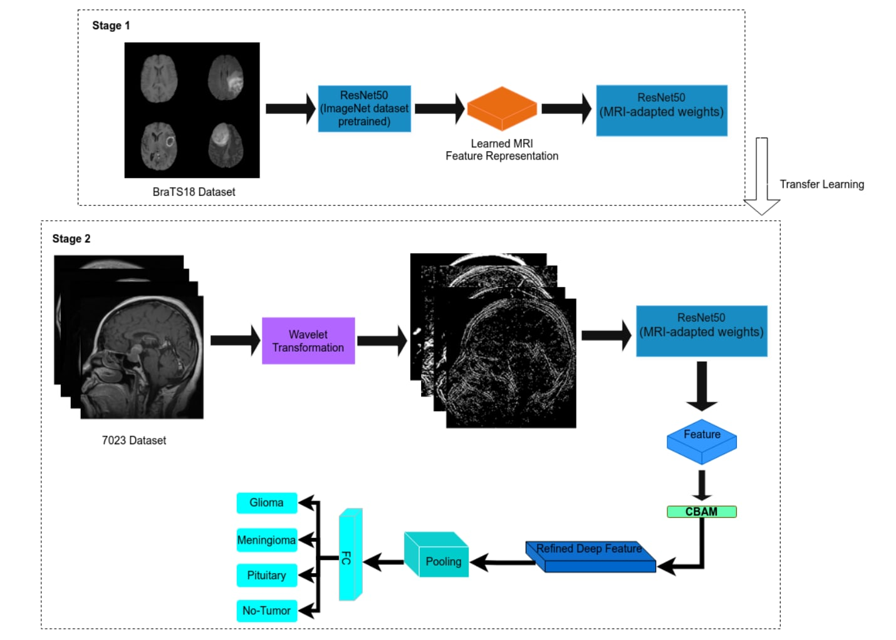

98.4% reported accuracy01 · MEDICAL AI
Wavelet–Attention Brain MRI Classification
A deep learning approach that combines wavelet-domain representations with attention to preserve multi-scale structural and texture cues for four-class brain MRI classification.
- Designed the wavelet-attention learning strategy and experimental pipeline.
- Evaluated on a 7,023-image shared brain MRI dataset.
- Extended master's research into a peer-reviewed journal publication.
PyTorchWavelet TransformAttentionGrad-CAM